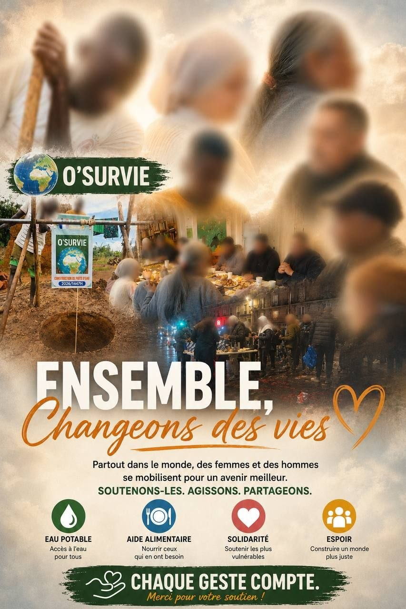

Soutenir O'SURVIE
Derrière chaque don, il y a un repas chaud, une main tendue, une présence quand tout vacille. Nous ne courons pas après les chiffres : nous accompagnons des personnes, une à une, dans la durée.

Pourquoi donner à O'SURVIE ?
Une aide directe, sans intermédiaire
Pas de structure lourde, pas de frais cachés. Vos dons financent immédiatement les courses, les repas, les sorties, le matériel des ateliers — tout ce qui se passe sur le terrain.
Une présence ancrée dans la durée
Depuis 2020, nous sommes là — chaque semaine, sans relâche. Les personnes que nous accompagnons savent qu'elles peuvent compter sur nous, et c'est cette continuité qui fait toute la différence.
Le respect avant tout
Pas de mise en scène de la précarité. Pas de visages exposés sans consentement. Nous protégeons celles et ceux que nous accompagnons, avec pudeur et dignité.
Une réduction d'impôt de 66%
O'SURVIE est reconnue d'intérêt général. Pour chaque euro donné, seuls 34 centimes restent réellement à votre charge. La générosité, ça se prête.
Des actions multiples, un même fil rouge
Maraudes, distributions, ateliers culinaires, yoga, sorties culturelles, accompagnement social. Neuf actions complémentaires, une seule boussole : l'humain.
Une transparence totale
Comptes annuels publics, reportings réguliers, témoignages écrits (jamais en image). Vous savez précisément à quoi sert votre don, et vous pouvez nous demander des comptes — toujours.
On ne fait rien d'extraordinaire. Mais quand quelqu'un te dit merci les yeux dans les yeux, tu repars différent.
Prêt·e à faire un bout de chemin avec nous ?
Vous choisissez le montant directement sur HelloAsso, en toute sécurité.
Donner sur HelloAsso